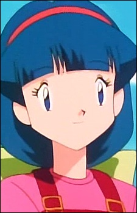

|
Dr. Anna |
|
Dr. Anna is the owner of clinic that treats peoples injuries with the help of Pokemon. She has a Zubat named Mimi. |
| |
Lola |
- Pokemon Chronicles
- Pokemon Advanced Generations
- Pokemon Diamond and Pearl Specials
|
Lola is a Water-type Pokemon specialist. She is the mother of Brock and Brock's siblings. She married to Flint. One of Lola's hobbies is decorating. |
|  |
Melanie |
|
Melanie is a girl who lives in a hidden village located between Cerulean City and Vermilion City. She cares for Pokemon abandoned in the forest. |